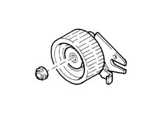

1032C timing system tensioners
- Path
- Descriptions > 10 ENGINE > 1032 TIMING SYSTEM > 1032C timing system tensioners
- Kind
- system description
- Applies to
- engines: 1.6 TS , 1.8 TS, 2.5 V6, 1.9 JTD 8v , 1.9 JTD 16v, 2.4 JTD 10v, 2.4 JTD 20v; all production periods
- Interactive page
- https://sloeber94.github.io/elrnDB-a156/en/#/3232832
Applies to: engines: 1.6 TS , 1.8 TS; all production periods
Refer 1032B belt timing system
Applies to: engines: 2.5 V6; all production periods
Refer 1032B belt timing system
Applies to: engines: 1.9 JTD 8v , 2.4 JTD 10v; all production periods
Refer 1032B belt timing system
Applies to: engines: 1.9 JTD 16v; all production periods
CONSTRUCTION FEATURES
The timimg belt is tensioned by an automatic tensioner which avoids the need to carry out operations to check the tension.
Applies to: engines: 2.4 JTD 20v; all production periods
COMPONENT DESCRIPTION
TIMING BELT TENSIONER
Specifcations
Type
The timimg belt is tensioned by an automatic tensioner which avoids the need to carry out operations to check the tension.
